關於本站
這裡是遊戲翻譯軟體 Babel Tower 的說明書網站
Google憑證取得說明
請注意，由於 cloud vision 和 cloud translation API 每個月皆有一定次數的免費額度限制，超過免費額度上限之後必須支付使用 API 的費用。
cloud vision 免費額度 ： 每個月前 1000 次請求免費，之後==每 1000 次請求需支付 1.5 美元==（實際收費方案請自行查閱 GCP (Google Cloud Platform) 頁面，這裡的收費資料為 2023 年查詢）
啟用Google Cloud Platform服務(一)
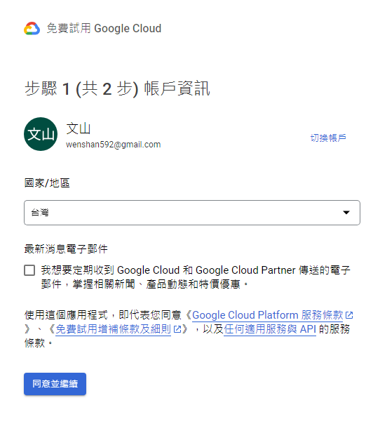【註冊Google Cloud Platform帳戶】
- 點選【免費開始使用】啟用Google Cloud platform服務，公司資訊任意填寫即可，無須照實填寫。本功能需使用 Google 帳號，若是您沒有 Google 帳號，請先建立帳號。
啟用Google Cloud Platform服務(二)
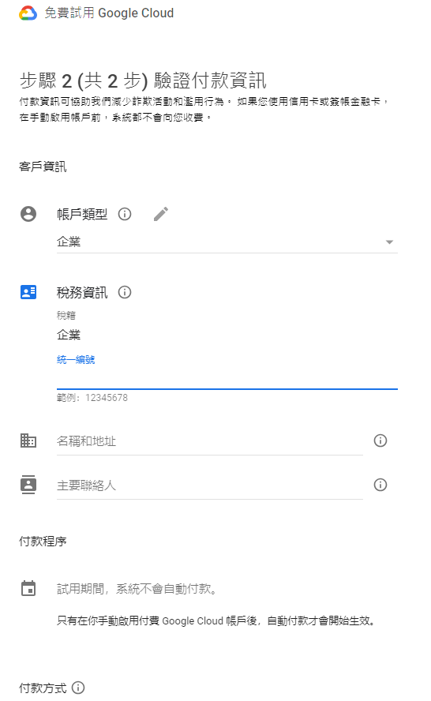【驗證付款資訊】
- 選擇您的付款方式，可以是信用卡或銀行帳戶。接下來，輸入必要的付款資訊。在確認提供的付款資訊無誤後，完成付款資訊的設定。
啟用API Key(一)
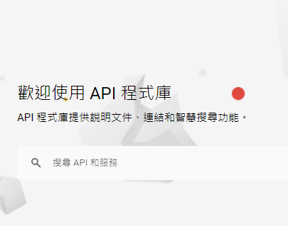【啟用API程式庫】
- 在程式庫中，您可以搜尋並找到需要啟用的 API，「Cloud Vision API」、「Cloud Translation API」。點擊相應的 API 以進入詳細資訊頁面。在詳細資訊頁面中，您會看到一個「啟用」的按鈕。
啟用API Key(二)
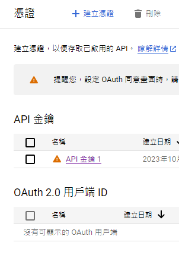【建立憑證】
- 點擊該按鈕以啟用這個 API。接下來，回到左側選單，點擊「API 和服務」，然後選擇「憑證」。在憑證頁面中，點擊「建立憑證」，然後選擇「API 金鑰」。在建立 API 金鑰的畫面中，您可以設定金鑰的限制，例如 IP 位址限制，以及啟用的 API 服務。設定完成後，點擊「建立」。建立成功後，你會看到生成的 API 金鑰。複製這個金鑰，並以此金鑰在 Babel Tower App 中進行設定。
功能簡介
主介面
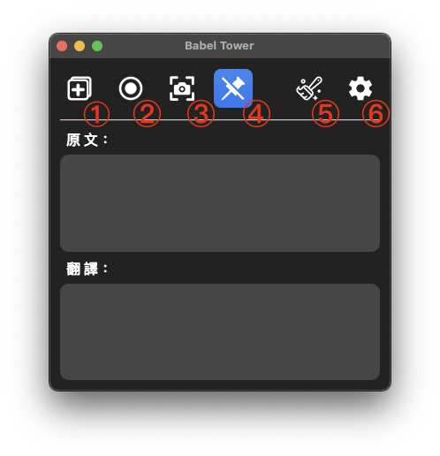
-
開啟【擷取視窗】：視窗開啟之後，將視窗拖曳到要翻譯的字幕區塊上，並將視窗大小調整到適當大小（建議不要框選到不相關的區塊，以免影響辨識和翻譯效果）
-
 ：當擷取視窗已開啟時，會將按鈕常亮。若已開啟的情況下，卻找不到擷取視窗時，可以再按一次按鈕，會將擷取視窗喚醒到所有視窗的最上層
：當擷取視窗已開啟時，會將按鈕常亮。若已開啟的情況下，卻找不到擷取視窗時，可以再按一次按鈕，會將擷取視窗喚醒到所有視窗的最上層
-
-
 開始或暫停【擷取畫面】功能：當擷取視窗開啟，並調整到適當大小後，按下按鈕便會開始擷取畫面並即時翻譯字幕文本
開始或暫停【擷取畫面】功能：當擷取視窗開啟，並調整到適當大小後，按下按鈕便會開始擷取畫面並即時翻譯字幕文本
- 螢幕截圖功能：按下按鈕之後，框選你要辨識翻譯的區塊後，便會將結果顯示在介面上
- 開啟或關閉【釘選視窗】功能：默認為開啟，開啟後主介面會釘選在所有視窗的的最上層。若【擷取視窗】也開啟的狀態下，會跟著主介面一起連動
- 清除主介面上的文字
- 開啟【設定】視窗
設定頁面(一)

【文字】
- 可調整主介面上的辨識和翻譯結果的【文字大小】及【文字顏色】
設定頁面(二)
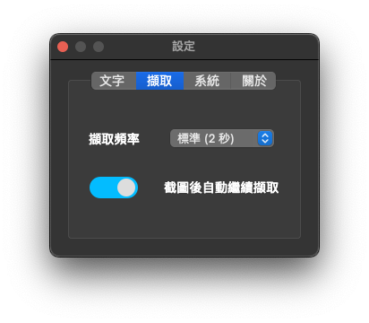【擷取】
- 可調整擷取畫面的頻率（即辨識的頻率），預設為【標準 (2 秒)】
- 擷取頻率建議值：
- 若字幕以一個一個字顯示，而非一次完整顯示整句，建議將頻率調整成【3 秒】或以上
- 若為一次顯示完整的句子，則根據字幕顯示的速度自行調整為適當的頻率秒數
設定頁面(三)
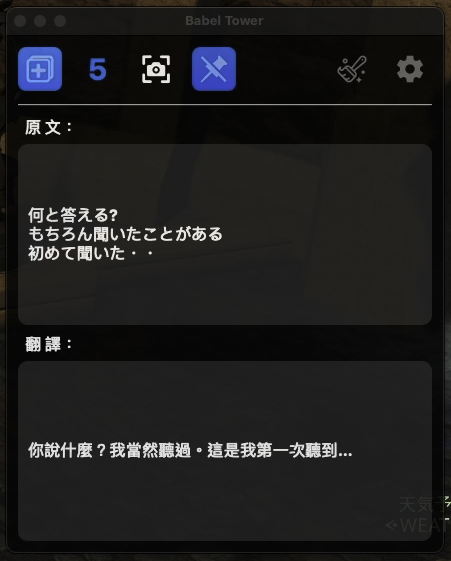【截圖後自動繼續擷取】
- 功能開啟後，當你在擷取畫面模式時使用截圖功能辨識畫面中某個區塊後，系統會自動倒數5秒，倒數結束之後自動恢復先前的擷取模式。如果關閉此功能，在截圖後，您就必須手動恢復先前的擷取畫面模式。
- 預設為【關閉】。
設定頁面(四)
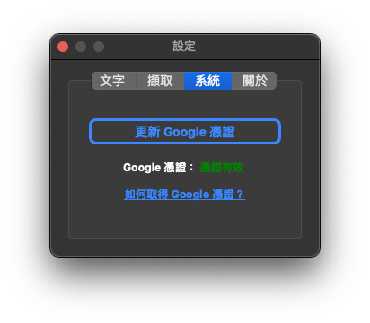【系統】
- 在此分頁上，你可以設定 Google 憑證。選擇申請好的憑證檔案後，憑證檔案會被複製到應用程式的資料夾內。這個設定是永久性的，每次啟動應用程式時都會檢查已設定的 Google 憑證是否可用。
- 若舊的憑證無法使用了，也可以在此頁面更新憑證。
使用說明？
『擷取畫面：自動翻譯字幕文本 (一)

- 首先，開啟擷取視窗，將視窗拖曳到字幕文本區塊上，並將使窗調整至適當大小
擷取畫面：自動翻譯字幕文本 (二)
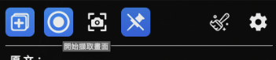
- 接著，按下開始擷取按鈕（由左往右數過來第二個按鈕）
擷取畫面：自動翻譯字幕文本 (三)

- 按下之後，便會自動擷取您選定的視窗位置的字幕文本內容，然後將其翻譯成中文。當您啟動功能後，系統會持續自動擷取您剛剛選擇的範圍，直到您按下暫停擷取為止。
單次截圖辨識及翻譯 (一)
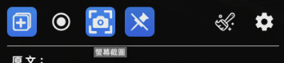
- 首先，按下螢幕截圖按鈕（由左往右數過來第三個按鈕）
單次截圖辨識及翻譯 (二)
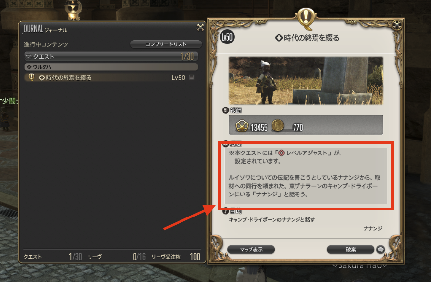
- 接者，框選要截圖辨識的區塊
單次截圖辨識及翻譯 (三)
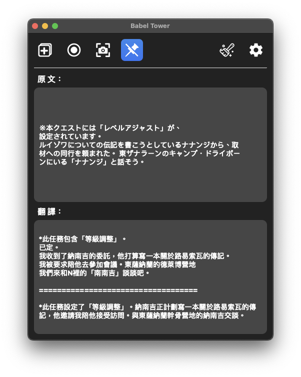
- 之後便會把剛剛框選的區塊進行辨識和翻譯
截圖翻譯說明 (一)
由於目前系統無法判斷當前截圖辨識的文本為一整段句子還是多個選項的文本，因此系統將會一次呈現兩種情況的結果。
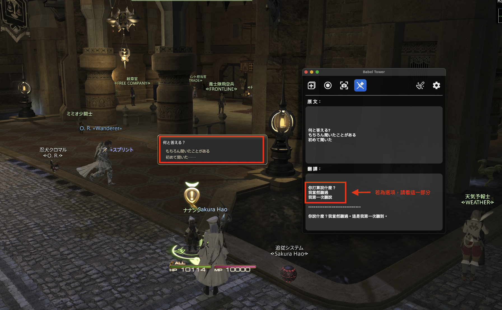
- 情況一：選項文本，請看上半部分
截圖翻譯說明 (二)
- 情況二：整段句子，請看下半部分
常見Q&A
這程式安全嗎？是如何運作的？
- 此程式是透過 Google Cloud Vision API 套件進行 OCR 辨識，之後再透過 Google Cloud Translation API 套件將辨識的文字進行翻譯，因此不會在您的電腦上安裝額外軟體，請放心。 程式碼皆已公開在 Github 上。
在 macOS 上，打開 App 時，系統提示檔案已損毀無法打開？
- 這是因為 macOS 的安全機制，即使來源正常，也會讓「未信任」應用軟體無法正常執行，這時作業系統給您的回應就是： 「XXX」應用程式已損毀，無法打開，您應該將其丟到「垃圾桶」。
- 可透過以下連結來解決此問題：瘋先生 - 如何解決macOS Ventura 13 檔案已損毀無法打開技巧方法
這程式支援辨識哪些語言？
- 由於此程式是透過 Google Cloud Vision API 套件進行 OCR 辨識，因此只要 Google Cloud Vision 有支援的話，皆可以辨識，世界上大部分主流語言皆有支援。
能翻譯成其他語言嗎？
- 目前系統預設是翻譯成繁體中文，尚未支援讓使用者選擇翻譯成其他語言的功能。
程式視窗無法維持在最上層？
- 請確保您要使用翻譯的應用程式是設定【視窗模式】，而非【全螢幕模式】。
為何沒有辨識到完整的字幕文本？
- 由於此應用程式是使用 Google Cloud Vision API 來識別畫面上的文字。為了避免重複辨識，系統會自動比對前後張畫面的相似度，判斷是否需要進行辨識。這樣做可以避免無用的 API 請求，降低額外的費用支出。
- 如果字幕不是一次完整顯示整句話，而是一個一個字顯示，建議將顯示頻率調整成至少 3 秒以上。這樣可以避免抓取速度太快，造成前後張畫面的相似度過高，讓系統誤判為不需要辨識，進而導致無法正確抓取到完整的句子。
如果我不想要使用這個程式了，我該去哪裡刪除掉該程式的設定檔？
- 在 macOS 上，直接將整個 App 丟到垃圾桶即可。
- 在 Windows 上，可以前往 【C:\Users(使用者)\user\Documents】 資料夾底下，會有一個 【Babel Tower】 資料夾，將該資料夾刪除即可。
更多介紹

- 原作者：
- SMH642800
- Current Position：
- Software Engineer
- mail：
- smh642800@gmail.com
- Github：
- https://github.com/SMH642800/BabelTower/